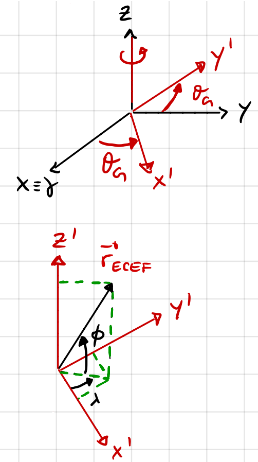
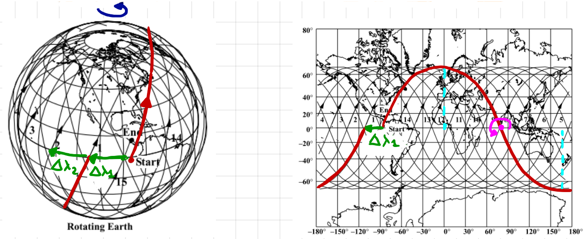
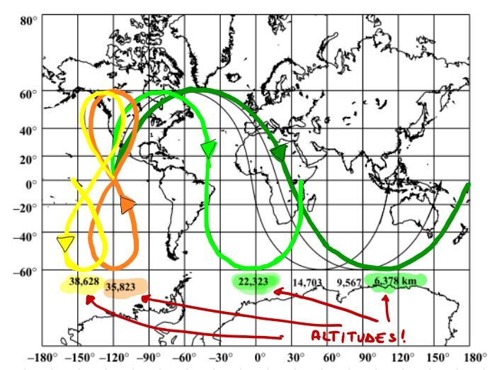
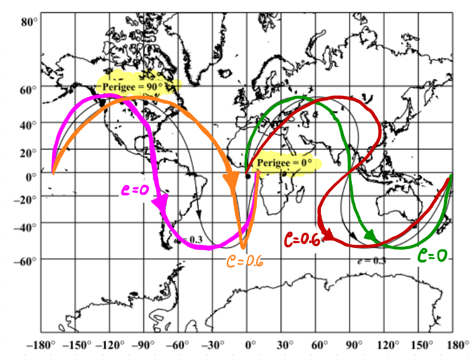
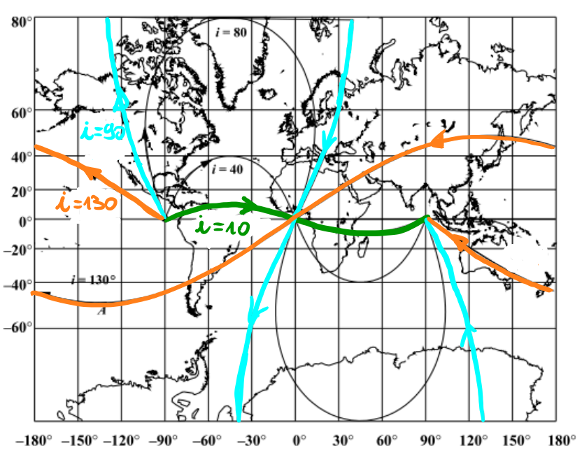
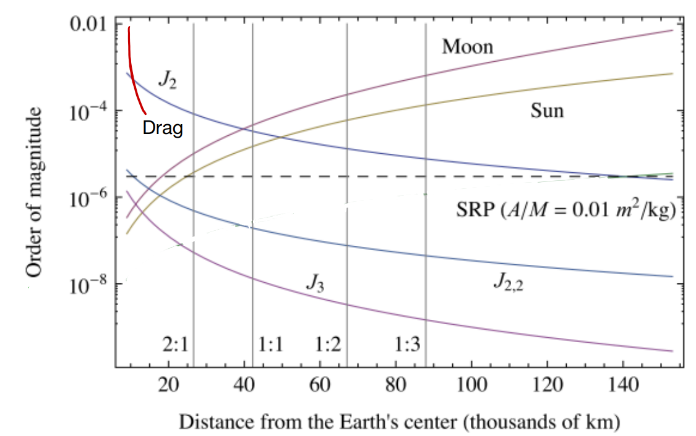
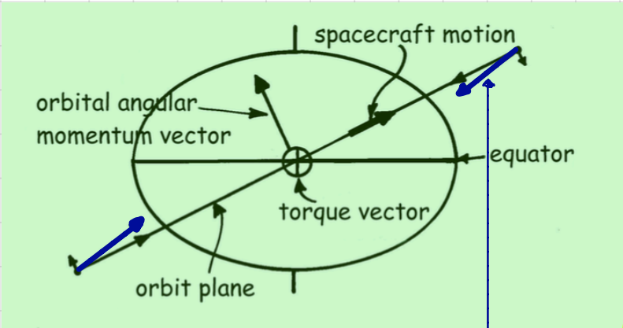
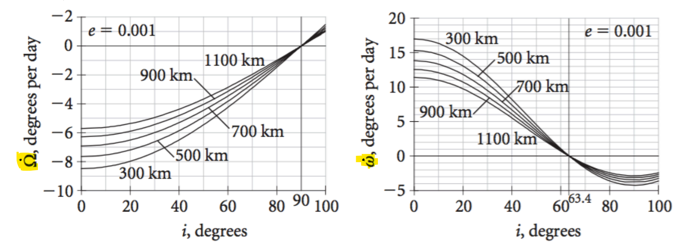

Ground Tracks and Orbit Perturbations#
Prepared by: Mitansh Choksi and Angadh Nanjangud
In this lecture we aim to cover the following topics:
Ground Tracks#
A groundtrack is the locus of points on the Earth’s surface directly below a satellite as it travels through the orbit.
Mathematically it is computed by a rotation of the spacecraft position vector around the Earth spin axis (z) to transform t from ECI (earth centered inertial) to Earth Centred Earth Fixed (ECEF).

Having a look at the above figure we can convert between the ECEF and ECI frames.
\(\mathbf{r}_{ECEF} = A_3 (\theta_G) \mathbf{r}_{ECI}\)
Here \(\theta_G\) is the sidereal time of Greenwich. This the angle between \(\gamma\) and the meridian of Greenwich.\(\lambda = tan^{-1} \frac{y_{ECEF}}{x_{ECEF}}\) This represents longitude
\(\phi = sin^{-1} \frac{z_{ECEF}}{r}\) This represents latitude
Groundtracks are very important. They provide information on the spacecraft orbit and are very useful for coverage and acess to ground stations.

The figure on the left shows 3D groundtracks and the image on the left shows 2D groundtracks.
The earth rotates counterclockwise so we see the groundtrack drifting west with each revolution by an amount \(\Delta \lambda\).
(238)#\[\Delta \lambda = T \cdot \omega_{e} = T \frac{2 \pi}{T_{\gamma}}\]
Here, \(T\) is the orbital period, \(T_{\gamma}\) is the sidereal day and \(\omega_{e}\) is the angular velocity of the earth.
From \(\Delta \lambda\) we can estimate T.
The maximum latitude reached is equal to the orbit inclination. (If it is a retrograde orbit then “\(180^\circ\)-i” )
From \(\phi_{max}\) we can estimate i
Circular orbits have ground tracks with symmetry about a line of longitude (e.g. greenwich meridian) and hinge symmetry.
Impact of Semi-major Axis (circular orbits)#

From the above figure we can see as the altitude increases the ground track drifts west more and \(\Delta \lambda\) increases.
When a increases, T increases and \(\Delta \lambda\) increases.
When \(T = T_\gamma \rightarrow \Delta \lambda = 360^\circ\) and the ground track closes: This is called a geosynchronous orbit
When \(T>T_\gamma \rightarrow \Delta \lambda>360^\circ\)
Why a Figure of 8?
The velocity of a point on Earth’s surface decreases with latitude: \(v_{G} = \omega_{e} R_{e}cos{\phi}\) where “\(R_e cos\phi\)” is the distance from the spin axis.
The velocity of the subsatellite point increases with latitude
When the subsatellite point is slower, the groundtrack drifts west, when it is faster it drifts east.
Effect of eccentricity and argument of perigee#

Close to perigee the sbsatellite point is faster hence a larger drift towards the East
Close to the apogee the subsatellite point is slower hence lower drift towards the East
When \(\omega = 90^\circ\) or \(270^\circ\) groundtracks become symmetric about the longitudinal axis
Effect of inclination#

The inclination determins the maximum latitude \(\phi_{max}\)
For prograde orbits: \(\phi_{max} = i\)
For retrograde orbits: \(\phi_{max} = 180^\circ - i\)
Orbit Perturbations#
Let us come back to our favourite two body dynamics equation:
Here \(\mathbf{h}\) and \(\mathbf{e}\) are constant. If \(\mathbf{h}\) and \(\mathbf{e}\) are constant then in an ideal world \(a,e, i, \Omega, \omega \) (recall Lecture 5) are all a constant. The motion of a spacecraft around the Earth is much more complex!
\(\mathbf{p}\) is a perturbation acceleration
\(\mathbf{p}\) can occur due to:
Atmospheric Drag: The interaction of the spacecraft and the Earth’s atmosphere
Solar Radiation: The interaction of the spacecraft with photons emitted from the sun
Third-body Gravity: Gravitational pull of other bodies (e.g. Sun, Moon, etc.)
Earth’s geopotential: Due to the oblateness of the earth the gravitational field is different from the one generated by a point mass. (we typically assume the earth is a point mass), hence the acceleration is not aligned with \(\mathbf{r}\)
The magnitude of the perturbations strongly depend on the postion of the spacecraft relative to the celestial bodies in question.

The above figure shows the relation betweeen the order of magnitude of the perturbation and the distance from the earth’s center.
The J terms are related to the Earth asphericity. \(J_2\) describes the Earth’s Oblateness.
Drag is dominant at low altitude (< 800 km) but the magnitude depends on the shape of the spacecraft and solar activity.
Solar radiation pressure (SRP): the only constant with altitude.
At high altitudes the luni-solar perturbations are dominant.
General effect on orbital parameter \(x_i\):
{
"tags":[
"hide-input",
]
}
import numpy as np
import matplotlib.pyplot as plt
x1 = np.linspace(0, 2.1, num = 100)
y1 = np.linspace(10, 10, num = 100)
y2 = -7*x1 +20
y3 = -2.5*x1**5 + 0.8*x1**4 +10*x1**3 -9.1*x1 +10
y4 = -2.5*x1**5 + 0.8*x1**4 +10*x1**3 -9.1*x1 +10 + np.sin(100*x1)
fig, (ax1, ax2) = plt.subplots(1, 2, figsize = (15, 3))
ax1.set_xlabel('t')
ax1.set_ylabel('$x_i$')
ax1.set_xticks([])
ax1.set_yticks([])
ax1.set_title('No perturbations')
ax1.plot(x1, y1)
ax2.set_xlabel('t')
ax2.set_ylabel('$x_i$')
ax2.set_xticks([])
ax2.set_yticks([])
ax2.set_title('Perturbations')
ax2. plot(x1, y2, 'r', label = 'secular variation (non-periodic)')
ax2. plot(x1, y3, 'g', label = 'long-term variation (period > orbital period)')
ax2. plot(x1, y4, 'm', label = 'short term variation (period < orbital period)')
ax2.legend()
plt.show()
The above graphs help to illustrate the effect of no perturbations on the left graph and the effect of perturbations on the right graph on the orbital parameter \(x_i\).
Effect of perturbations: Examples#
Drag: Force in the orbit plane in the opposite direction of the velocity
(241)#\[\mathbf{F_D} = \frac{1}{2}\rho s c_D v \mathbf{v}\]with \(\rho\) as atmospheric density, s as the reference surface, \(c_D\) as the drag coefficient. A secular decrease of a and e results in spiralling down towards Earth’s surface.
Earth’s Oblateness \(J_2\):
Short term variation of all orbital parameters
Secular variation of \(\Omega\) and \(\omega\)

As seen in the agove figure, the graviational pull is no longer aligned with \(\mathbf{r}\) at the blue arrows.
Here \(R_E = 6378.14\) km (earth’s radius) and \(J_2 = 1.082 \times 10^{-3}\)
Secular variation of \(\Omega\) and \(\omega\) due to \(J_2\) (as a function of the inclination)
The above two equations can be shown further in the diagrams below. 
\(\dot \Omega < 0\) (clockwise) for \( i < 90^\circ\)
\(\dot \Omega = 0\) for \(i = 90^\circ\)
\(\dot \Omega > 0\) (counterclockwise) for \(i > 90^\circ\)
\(\dot \omega > 0\) for \( i < 63.4^\circ\)
\(\dot \omega = 0\) for \(i = 63.4^\circ\)
\(\dot \omega > 0\) for \(i > 63.4^\circ\)
\(i = 63.4^\circ\) is reffered to as critical inclination